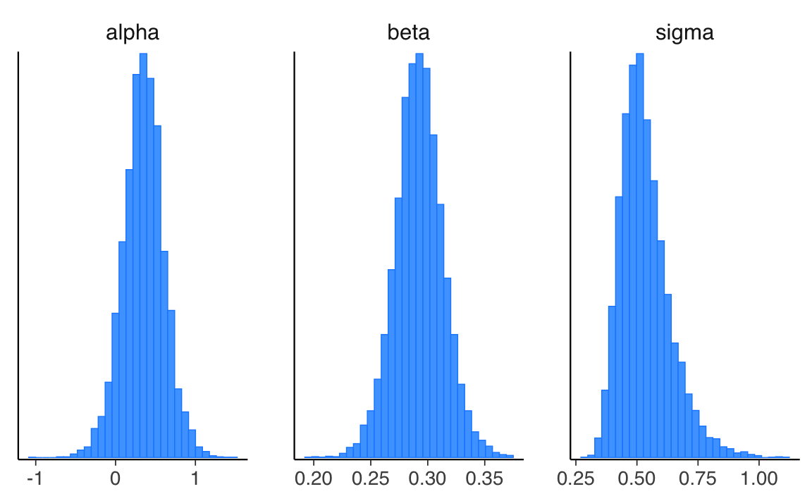
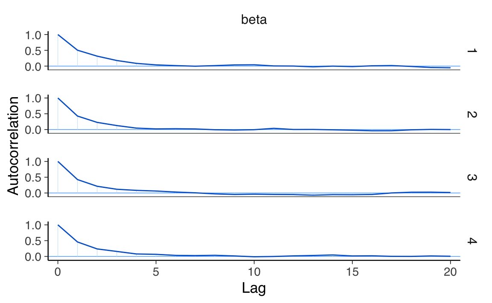
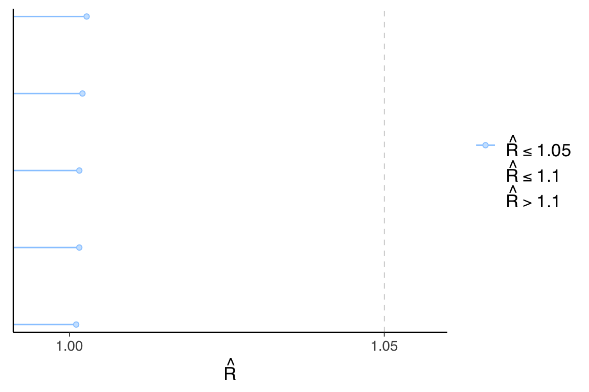
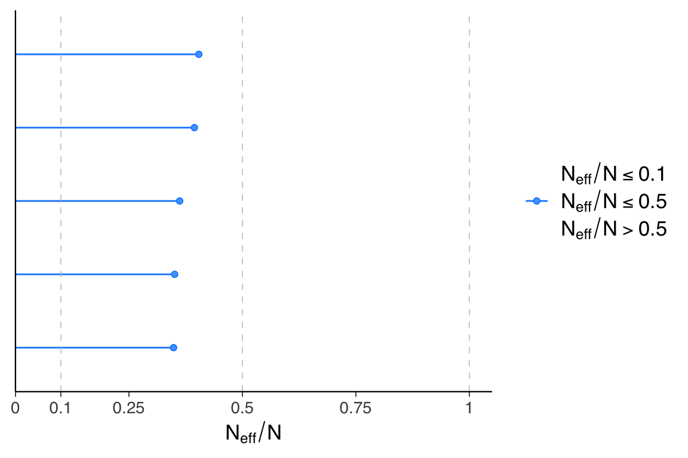
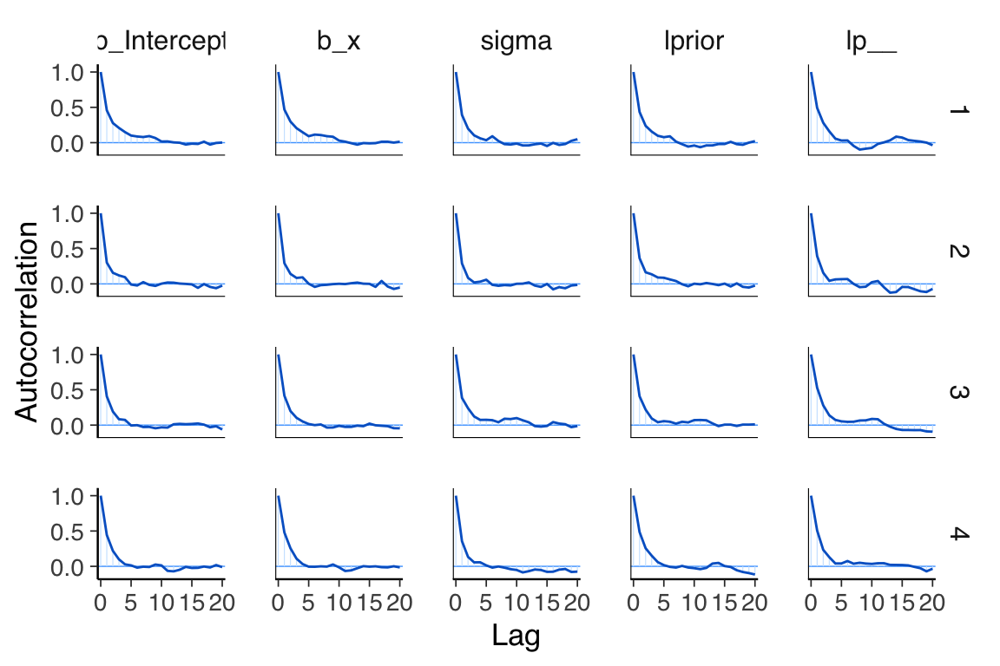
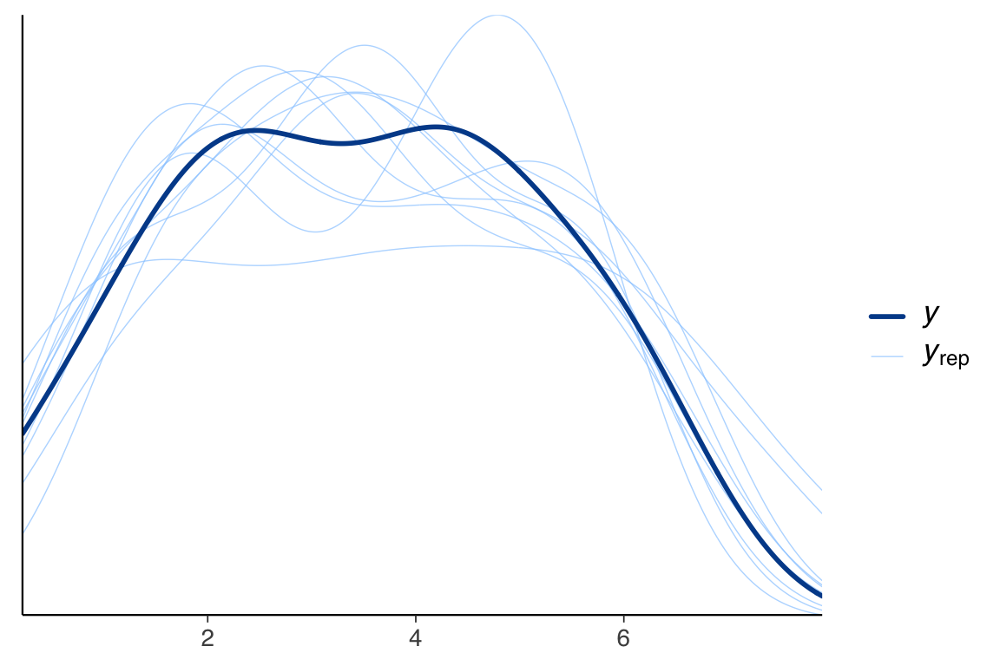

here::here("code", "_common.R") |>
source()
# Load packages
if (!requireNamespace("pacman")) install.packages("pacman")
pacman::p_load(cmdstanr, posterior, see, brms)58 Modello bayesiano di regressione lineare bivariata
Cosa Imparerai in Questo Capitolo
- Comprendere il modello di regressione bayesiano e come si differenzia dall’approccio frequentista.
- Interpretare i parametri stimati in un contesto bayesiano e confrontarli con quelli frequentisti.
- Familiarizzare con l’uso di Stan e {brms} nella regressione.
- Interpretare le previsioni del modello bayesiano e le verifiche predittive a posteriori.
Prerequisiti
- Leggere Regression and Other Stories (Gelman et al., 2021).
- Prestare particolare attenzione ai capitoli 1 “Overeview, 6,”Background on Regression Modeling,” 7, “Linear Regression with a Single Predictor” e 8, “Fitting regression models”, che offrono una guida dettagliata al modello di regressione bivariato.
Preparazione del Notebook
58.1 Introduzione
In questa sezione della dispensa, esploreremo il modello di regressione lineare bivariata bayesiano, confrontandolo con l’approccio frequentista. Questi modelli statistici sono impiegati principalmente per due finalità: inferenza e previsione. Mentre la previsione mira a descrivere le associazioni tra le variabili, l’inferenza si focalizza sul delineare relazioni causali tramite un modello lineare. È importante notare che, sebbene la capacità predittiva di un modello possa essere verificata empiricamente, l’uso della regressione per dedurre causalità richiede una rigorosa progettazione sperimentale o quasi-sperimentale, nonché una solida base di giustificazioni per le ipotesi utilizzate. Bisogna inoltre tenere presente che l’analisi di regressione costituisce una forma di media ponderata, e pertanto i suoi risultati possono essere influenzati da bias e specificità del dataset utilizzato.
58.2 Modello di Regressione Bayesiano
Dopo aver confermato che il modello di regressione recupera in modo affidabile i valori teorici dell’intercetta e della pendenza della retta di regressione, procediamo ora ad applicare il modello a dataset reali. L’approccio bayesiano si distingue dai metodi dei minimi quadrati o della massima verosimiglianza in quanto non si limita a determinare i parametri che meglio si adattano ai dati osservati secondo un criterio prefissato. Al contrario, integra queste stime con informazioni a priori sui parametri stessi, combinando la verosimiglianza dei dati con una distribuzione a priori che rappresenta le ipotesi o le conoscenze preesistenti. In questo modo, l’inferenza bayesiana diventa un processo di aggiornamento delle credenze: la distribuzione a posteriori dei parametri riflette la conoscenza aggiornata dopo aver osservato i dati. A differenza dei metodi classici che forniscono stime puntuali, l’inferenza bayesiana produce distribuzioni a posteriori che esprimono la probabilità di ogni possibile valore dei parametri, considerando l’incertezza complessiva nel modello.
Nel contesto di un modello lineare bayesiano, adottiamo le seguenti convenzioni: le variabili di risposta sono indicate con \(y\), le variabili predittive (note anche come covariate o caratteristiche) con \(x\), e l’indice di osservazione con \(i\), che va da 1 al numero totale di osservazioni. La verosimiglianza di un semplice modello lineare (gaussiano) si può esprimere come:
\[ y_i \sim Normale(\mu_i, \sigma), \]
dove \(\mu_i = b_0 + b_1x_i\). La distribuzione normale univariata è definita in termini di media e deviazione standard.
Nel modello bayesiano lineare, i parametri principali sono l’intercetta \(b_0\) e il coefficiente \(b_1\) associato alla variabile predittiva. Questi parametri insieme formano il predittore lineare \(\mu\). Il parametro \(\sigma\) rappresenta la deviazione standard residua, ovvero la variabilità che non può essere spiegata dal modello lineare e che cattura l’errore o il “rumore” presente nei dati.
Per esempio, se desideriamo modellare la relazione tra ansia di stato (\(y\)) e Tense Arousal (\(x\)), l’approccio bayesiano permette di strutturare il modello in modo simile a quanto fatto con i metodi classici. Anche qui, si assume che gli errori siano indipendenti tra loro, distribuiti normalmente con media zero e varianza costante \(\sigma^2\). Tuttavia, l’approccio bayesiano consente anche di specificare distribuzioni a priori per i parametri del modello (\(b_0\), \(b_1\), \(\sigma\)), che rappresentano la conoscenza iniziale sui parametri prima di osservare i dati.
Dopo aver raccolto i dati, si utilizza il teorema di Bayes per aggiornare queste distribuzioni a priori e ottenere le distribuzioni a posteriori dei parametri. Le distribuzioni a posteriori combinano l’informazione fornita dai dati con le credenze iniziali, offrendo stime dei parametri che riflettono sia l’evidenza empirica che le conoscenze preesistenti, garantendo un’inferenza più robusta e flessibile.
58.2.1 Verosimiglianza
Nel modello di regressione lineare bayesiano bivariato, la verosimiglianza che descrive la relazione tra ansia di stato (y) e Tense Arousal (x) assume che: \[ y \sim Normale(\alpha + \beta x, \sigma) \] Questo implica che i valori osservati di y sono distribuiti normalmente attorno alla retta di regressione \(\alpha + \beta x\), con una deviazione standard \(\sigma\). In altre parole, ogni osservazione di y è una combinazione lineare dell’intercetta \(\alpha\), del coefficiente \(\beta\) che moltiplica la variabile predittiva x, e di un termine di errore distribuito normalmente.
58.2.2 Distribuzioni a Priori
Per implementare l’approccio bayesiano, definiamo delle distribuzioni a priori per i parametri \(\alpha\), \(\beta\), e \(\sigma\). Anche se è possibile utilizzare delle distribuzioni a priori uniformi, che esprimono una mancanza di conoscenza specifica o una neutralità nelle credenze iniziali sui valori di questi parametri, questa pratica è scoraggiata. È invece consigliato, in assenza di informazioni preliminari, di utilizzare dei prior debolmente informativi:
\[ \alpha \sim \mathcal{N}(0, 2.5), \]
\[ \beta \sim \mathcal{N}(0, 2.5), \]
\[ \sigma \sim \text{Cauchy}(0, 2.5) \]
58.2.3 Distribuzioni a Posteriori
Le distribuzioni a posteriori sono ottenute combinando la verosimiglianza con le distribuzioni a priori mediante il teorema di Bayes. Queste distribuzioni a posteriori riflettono il nostro stato di conoscenza sui parametri dopo aver osservato i dati, incorporando sia le informazioni contenute nei dati che le credenze iniziali espresse dalle distribuzioni a priori. L’approccio bayesiano non solo fornisce stime dei parametri, ma anche una quantificazione dell’incertezza associata a queste stime, rendendo il metodo particolarmente utile in situazioni con dati limitati o incertezza rilevante.
58.3 Adattare una Retta di Regressione a Dati Simulati
Simuliamo 200 osservazioni di \(x\) e \(y\), dove \(y\) è generato seguendo i parametri specificati. Questo ci permette di modellare e comprendere in modo più completo e robusto la relazione tra ansia di stato e Tense Arousal, integrando informazioni preesistenti con nuove evidenze empiriche.
In sintesi, il modello di regressione bayesiano può essere riassunto come segue. La verosimiglianza è data da:
\[ y_i \sim \mathcal{N}(\alpha + \beta \cdot x_i; \sigma) \]
Definiamo i parametri e simuliamo i dati.
set.seed(123)
# Definizione delle variabili
x <- 1:20
n <- length(x)
a <- 0.2
b <- 0.3
sigma <- 0.5
# Generazione di y
y <- a + b * x + sigma * rnorm(n)
# Creazione del dataframe
fake <- tibble(x = x, y = y)
head(fake)
#> # A tibble: 6 × 2
#> x y
#> <int> <dbl>
#> 1 1 0.220
#> 2 2 0.685
#> 3 3 1.88
#> 4 4 1.44
#> 5 5 1.76
#> 6 6 2.86Adattiamo quindi ai dati un modello di regressione bayesiano utilizzando {cmdstanr}. Scriviamo il modello in un file Stan. Salviamo il file come linear-regression.stan e compiliamo il modello:
model <- cmdstan_model(
here::here("stan", "linear-regression.stan")
)Il modello ha questa forma:
model$print()
#> // all data should be scaled to mean 0 and std 1:
#> data {
#> int<lower=1> N;
#> vector[N] x;
#> vector[N] y;
#> }
#> parameters {
#> real alpha;
#> real beta;
#> real<lower=0> sigma;
#> }
#> model {
#> y ~ normal(alpha + beta * x, sigma);
#> alpha ~ normal(0, 2.5);
#> beta ~ normal(0, 2.5);
#> sigma ~ cauchy(0, 2.5);
#> }
#> generated quantities {
#> vector[N] log_lik;
#> vector[N] y_rep;
#> for (n in 1:N) {
#> log_lik[n] = normal_lpdf(y[n] | alpha + beta * x[n], sigma);
#> y_rep[n] = normal_rng(alpha + beta * x[n], sigma);
#> }
#> }Prepariamo i dati nel formato appropriato per Stan:
stan_data <- list(
N = nrow(fake),
x = fake$x,
y = fake$y
)Eseguiamo il campionamento:
fit <- model$sample(
data = stan_data,
seed = 123,
iter_warmup = 2000,
iter_sampling = 2000,
show_message = FALSE
)Sintesi dei risultati:
fit$summary(variables = c("alpha", "beta", "sigma"))
#> # A tibble: 3 × 10
#> variable mean median sd mad q5 q95 rhat ess_bulk ess_tail
#> <chr> <dbl> <dbl> <dbl> <dbl> <dbl> <dbl> <dbl> <dbl> <dbl>
#> 1 alpha 0.349 0.351 0.256 0.239 -0.0692 0.763 1.00 2650. 2722.
#> 2 beta 0.292 0.292 0.0213 0.0199 0.258 0.328 1.00 2727. 2404.
#> 3 sigma 0.535 0.518 0.102 0.0908 0.399 0.726 1.00 2914. 3110.Disegniamo un diagramma a dispersione con la retta di regressione stimata.
# Estrazione dei parametri stimati
posterior_summary <- fit$summary(c("alpha", "beta"))
alpha_hat <- posterior_summary$mean[1]
beta_hat <- posterior_summary$mean[2]
# Scatterplot con la retta di regressione
ggplot(fake, aes(x = x, y = y)) +
geom_point(color = "blue") +
geom_abline(intercept = alpha_hat, slope = beta_hat, color = "red") +
labs(
title = "Scatterplot con Retta di Regressione Stimata",
x = "x",
y = "y"
)
Confrontiamo le stime ottenute con i valori reali dei parametri simulati. L’intercetta è stata stimata attorno a 0.2, con un’incertezza che varia tra 0.15 e 0.30. Questo risultato rientra negli intervalli di credibilità previsti e non sorprende, confermando l’accuratezza del modello. Analogamente, per la pendenza \(b\), l’intervallo di credibilità al 95% include il valore reale simulato, dimostrando come le stime bayesiane riflettano accuratamente l’incertezza sui parametri, anche con campioni di dimensioni ridotte.
58.4 Funzione brm() per semplificare l’interazione con Stan
Per facilitare l’interazione con Stan, senza dover utilizzare direttamente cmdstan, possiamo ricorrere a un’interfaccia di livello più alto: la funzione brm() del pacchetto brms. Questa funzione permette di definire e stimare modelli bayesiani in modo più immediato. Se non specificati, brm() utilizzerà dei prior debolmente informativi per impostazione predefinita. Tuttavia, in questo esempio, impostiamo manualmente gli stessi prior dei parametri già utilizzati nel modello implementato con cmdstan, assicurando coerenza tra gli approcci.
M1 <- brm(
bf(y ~ 1 + x, center = FALSE), # Modello con intercetta (1) e covariata x
data = fake, # Dataframe contenente i dati
family = gaussian(), # Distribuzione della variabile dipendente
prior = c(
prior(normal(0, 2.5), class = "b", coef = "Intercept"), # Prior per alpha
prior(normal(0, 2.5), class = "b", coef = "x"), # Prior per beta
prior(cauchy(0, 2.5), class = "sigma") # Prior per sigma
),
seed = 123,
backend = "cmdstanr"
)Le stime a posteriori si possono visualizzare nel modo seguente:
summary(M1)
#> Family: gaussian
#> Links: mu = identity; sigma = identity
#> Formula: y ~ 1 + x
#> Data: fake (Number of observations: 20)
#> Draws: 4 chains, each with iter = 2000; warmup = 1000; thin = 1;
#> total post-warmup draws = 4000
#>
#> Regression Coefficients:
#> Estimate Est.Error l-95% CI u-95% CI Rhat Bulk_ESS Tail_ESS
#> Intercept 0.36 0.24 -0.12 0.82 1.00 1447 1704
#> x 0.29 0.02 0.25 0.33 1.00 1393 1615
#>
#> Further Distributional Parameters:
#> Estimate Est.Error l-95% CI u-95% CI Rhat Bulk_ESS Tail_ESS
#> sigma 0.53 0.10 0.38 0.75 1.00 1633 1616
#>
#> Draws were sampled using sample(hmc). For each parameter, Bulk_ESS
#> and Tail_ESS are effective sample size measures, and Rhat is the potential
#> scale reduction factor on split chains (at convergence, Rhat = 1).Si osserva che le stime a posteriori ottenute sono molto simili a quelle fornite da CmdStan. Utilizzando le funzioni del pacchetto bayesplot, possiamo visualizzare le tracce dei parametri tramite la funzione traceplot. Questo strumento permette di esaminare graficamente la convergenza e la distribuzione delle stime nel corso delle iterazioni, facilitando l’analisi della qualità dell’inferenza bayesiana.
mcmc_trace(M1)
L’aspetto delle catene, simile a un “bruco sfocato” (fuzzy caterpillar), suggerisce che le catene si mescolano bene e convergono verso una distribuzione comune. Inoltre, possiamo valutare i valori di Rhat per ciascun parametro. È prassi comune considerare che valori di Rhat inferiori a 1.05 indicano una buona convergenza. Il pacchetto bayesplot facilita il calcolo di queste metriche, rendendo più accessibile l’analisi della convergenza delle stime.
rhats <- rhat(M1)
mcmc_rhat(rhats)
58.5 Effective Sample Size (ESS)
ESS stima il numero di campioni indipendenti ottenuti dalla distribuzione a posteriori per un determinato parametro. Questo indicatore è fondamentale perché le catene di Markov possono presentare autocorrelazione, che potrebbe distorcere le stime dei parametri. Utilizzando il pacchetto bayesplot, possiamo visualizzare il rapporto tra la dimensione campionaria efficace e il numero totale di campioni raccolti. Un rapporto più alto suggerisce stime più affidabili. Una soglia critica è rappresentata da rapporti inferiori a 0.1, che potrebbero indicare potenziali problemi nelle stime.
eff_ratio <- neff_ratio(M1)
mcmc_neff(eff_ratio)
Inoltre, possiamo valutare l’autocorrelazione dei campioni per capire meglio nostre catene:
mcmc_acf(M1)
58.6 Verifiche Predittive a Posteriori
Un vantaggio particolarmente potente dell’inferenza bayesiana è la capacità di effettuare verifiche predittive a posteriori. Queste verifiche sono cruciali per valutare quanto accuratamente il nostro modello possa generare dati che somigliano a quelli osservati. Se il modello è correttamente specificato, i dati simulati a partire dalla distribuzione a posteriori dovrebbero riflettere fedelmente i dati reali, confermando così l’adeguatezza del modello.
pp_check(M1)
#> Using 10 posterior draws for ppc type 'dens_overlay' by default.
Maggiore è la vicinanza tra i valori generati (\(y_{rep}\)) e i dati osservati (\(y\)), maggiore sarà l’adeguatezza del modello a rappresentare la realtà osservata.
58.7 Simulazione di Livelli di Copertura
Verifichiamo la copertura degli intervalli di credibilità al 95% attraverso simulazioni ripetute.
set.seed(42)
# Parametri veri
a_true <- 0.2
b_true <- 0.3
sigma_true <- 0.5
# Numero di simulazioni
num_simulations <- 1000
# Conteggio delle coperture
coverage_a <- 0
coverage_b <- 0
for (i in 1:num_simulations) {
# Generazione dei dati
x <- 1:20
y <- a_true + b_true * x + sigma_true * rnorm(length(x))
# Adattamento del modello
fit <- lm(y ~ x)
ci <- confint(fit) # Intervalli di confidenza
# Verifica delle coperture
if (ci[1,1] <= a_true & ci[1, 2] >= a_true) {
coverage_a <- coverage_a + 1
}
if (ci[2,1] <= b_true & ci[2, 2] >= b_true) {
coverage_b <- coverage_b + 1
}
}# Risultati
cat("Coverage for a:", coverage_a / num_simulations, "\n")
#> Coverage for a: 0.952
cat("Coverage for b:", coverage_b / num_simulations, "\n")
#> Coverage for b: 0.955I risultati mostrano che i livelli di copertura empirici dell’approccio frequentista si avvicinano a quelli teorici previsti.
# Definizione dei parametri
set.seed(23)
n_fake <- 1000
cover_68 <- rep(NA, n_fake)
cover_95 <- rep(NA, n_fake)
a <- 0.2 # Intercetta vera
b <- 0.3 # Pendenza vera
sigma <- 0.5 # Deviazione standard vera
x <- 1:20 # Variabile indipendente
n <- length(x) # Numero di osservazioni
# Ciclo per simulazioni
for (s in 1:n_fake) {
# Generazione dei dati
y <- a + b * x + rnorm(n, 0, sigma)
fake <- data.frame(x = x, y = y)
# Adattamento del modello con brms
fit <- brm(
bf(y ~ 1 + x, center = FALSE),
data = fake,
family = gaussian(),
prior = c(
prior(normal(0, 2.5), class = "b", coef = "Intercept"), # Prior per alpha
prior(normal(0, 2.5), class = "b", coef = "x"), # Prior per beta
prior(cauchy(0, 2.5), class = "sigma") # Prior per sigma
),
seed = 42,
iter = 2000,
chains = 2,
refresh = 0, # Suppress console output
backend = "cmdstanr"
)
# Estrazione dei coefficienti stimati e delle deviazioni standard
posterior_summary <- summary(fit)$fixed
b_hat <- posterior_summary["x", "Estimate"]
b_se <- posterior_summary["x", "Est.Error"]
# Calcolo della copertura
cover_68[s] <- abs(b - b_hat) < b_se
cover_95[s] <- abs(b - b_hat) < 2 * b_se
}# Summarize the coverage results
mean_cover_68 <- mean(cover_68, na.rm = TRUE)
mean_cover_95 <- mean(cover_95, na.rm = TRUE)
cat("Coverage for 68% interval:", mean_cover_68, "\n")
#> Coverage for 68% interval: 0.701
cat("Coverage for 95% interval:", mean_cover_95, "\n")
#> Coverage for 95% interval: 0.954Questa seconda simulazione mostra come anche i livelli di copertura empirici dell’approccio bayesiano si avvicinano a quelli teorici previsti.
Questo conferma la validià degli intervalli stimati tramite il modello bayesiano e frequentista.
58.8 Confronti, non Effetti
Gelman et al. (2021) sottolineano che i coefficienti di regressione sono spesso denominati “effetti”, ma questa terminologia può trarre in inganno. Gli “effetti”, infatti, implicano una relazione causale. Tuttavia, ciò che un modello di regressione stima non è necessariamente un effetto causale, ma piuttosto un pattern osservazionale. In particolare, ciò che osserviamo è che la media della variabile dipendente nella sottopopolazione con \(X = x + 1\) è spesso maggiore o minore (a seconda del segno di \(\beta\)) rispetto alla media della sottopopolazione con \(X = x\).
La regressione è uno strumento matematico utilizzato principalmente per fare previsioni. I coefficienti di regressione devono quindi essere interpretati come confronti medi. Solo in circostanze specifiche, quando la regressione descrive un processo causale ben definito, è possibile interpretarli come effetti. Tuttavia, questa interpretazione causale deve essere giustificata dal disegno dello studio e non può essere dedotta unicamente dall’uso del modello statistico.
58.9 Riflessioni Conclusive
In questo capitolo, abbiamo adottato una prospettiva bayesiana per stimare i parametri di un modello di regressione bivariato, cogliendo l’opportunità di riflettere sulla natura e sul ruolo dei modelli statistici nella ricerca scientifica, e in particolare nell’ambito psicologico. Come sottolineato da Alexander (2023), i modelli statistici non sono strumenti per scoprire una verità assoluta, bensì mezzi per interpretare e dare significato ai dati a nostra disposizione. In questa ottica, i modelli non vanno intesi come riproduzioni fedeli della realtà, ma piuttosto come “lenti” che ci permettono di mettere a fuoco e comprendere, almeno in parte, il mondo che ci circonda.
Informazioni sull’Ambiente di Sviluppo
sessionInfo()
#> R version 4.4.2 (2024-10-31)
#> Platform: aarch64-apple-darwin20
#> Running under: macOS Sequoia 15.1.1
#>
#> Matrix products: default
#> BLAS: /Library/Frameworks/R.framework/Versions/4.4-arm64/Resources/lib/libRblas.0.dylib
#> LAPACK: /Library/Frameworks/R.framework/Versions/4.4-arm64/Resources/lib/libRlapack.dylib; LAPACK version 3.12.0
#>
#> locale:
#> [1] C/UTF-8/C/C/C/C
#>
#> time zone: Europe/Rome
#> tzcode source: internal
#>
#> attached base packages:
#> [1] stats graphics grDevices utils datasets methods base
#>
#> other attached packages:
#> [1] rstan_2.32.6 StanHeaders_2.32.10 brms_2.22.8
#> [4] Rcpp_1.0.13-1 see_0.9.0 posterior_1.6.0
#> [7] cmdstanr_0.8.1.9000 MASS_7.3-61 viridis_0.6.5
#> [10] viridisLite_0.4.2 ggpubr_0.6.0 ggExtra_0.10.1
#> [13] gridExtra_2.3 patchwork_1.3.0 bayesplot_1.11.1
#> [16] psych_2.4.6.26 scales_1.3.0 markdown_1.13
#> [19] knitr_1.49 lubridate_1.9.3 forcats_1.0.0
#> [22] stringr_1.5.1 dplyr_1.1.4 purrr_1.0.2
#> [25] readr_2.1.5 tidyr_1.3.1 tibble_3.2.1
#> [28] ggplot2_3.5.1 tidyverse_2.0.0 rio_1.2.3
#> [31] here_1.0.1
#>
#> loaded via a namespace (and not attached):
#> [1] mnormt_2.1.1 inline_0.3.20 sandwich_3.1-1
#> [4] rlang_1.1.4 magrittr_2.0.3 multcomp_1.4-26
#> [7] matrixStats_1.4.1 compiler_4.4.2 loo_2.8.0
#> [10] reshape2_1.4.4 vctrs_0.6.5 pkgconfig_2.0.3
#> [13] fastmap_1.2.0 backports_1.5.0 labeling_0.4.3
#> [16] utf8_1.2.4 promises_1.3.2 rmarkdown_2.29
#> [19] tzdb_0.4.0 ps_1.8.1 xfun_0.49
#> [22] jsonlite_1.8.9 later_1.4.1 broom_1.0.7
#> [25] parallel_4.4.2 R6_2.5.1 stringi_1.8.4
#> [28] car_3.1-3 estimability_1.5.1 zoo_1.8-12
#> [31] pacman_0.5.1 splines_4.4.2 httpuv_1.6.15
#> [34] Matrix_1.7-1 timechange_0.3.0 tidyselect_1.2.1
#> [37] abind_1.4-8 yaml_2.3.10 codetools_0.2-20
#> [40] miniUI_0.1.1.1 curl_6.0.1 processx_3.8.4
#> [43] pkgbuild_1.4.5 plyr_1.8.9 lattice_0.22-6
#> [46] shiny_1.9.1 withr_3.0.2 bridgesampling_1.1-2
#> [49] coda_0.19-4.1 evaluate_1.0.1 survival_3.7-0
#> [52] RcppParallel_5.1.9 pillar_1.9.0 carData_3.0-5
#> [55] tensorA_0.36.2.1 stats4_4.4.2 checkmate_2.3.2
#> [58] distributional_0.5.0 generics_0.1.3 rprojroot_2.0.4
#> [61] hms_1.1.3 rstantools_2.4.0 munsell_0.5.1
#> [64] xtable_1.8-4 glue_1.8.0 emmeans_1.10.5
#> [67] tools_4.4.2 data.table_1.16.2 ggsignif_0.6.4
#> [70] mvtnorm_1.3-2 grid_4.4.2 QuickJSR_1.4.0
#> [73] colorspace_2.1-1 nlme_3.1-166 Formula_1.2-5
#> [76] cli_3.6.3 fansi_1.0.6 Brobdingnag_1.2-9
#> [79] V8_6.0.0 gtable_0.3.6 rstatix_0.7.2
#> [82] digest_0.6.37 TH.data_1.1-2 htmlwidgets_1.6.4
#> [85] farver_2.1.2 htmltools_0.5.8.1 lifecycle_1.0.4
#> [88] mime_0.12Bibliografia
Alexander, R. (2023). Telling Stories with Data: With Applications in R. Chapman; Hall/CRC.
Gelman, A., Hill, J., & Vehtari, A. (2021). Regression and other stories. Cambridge University Press.